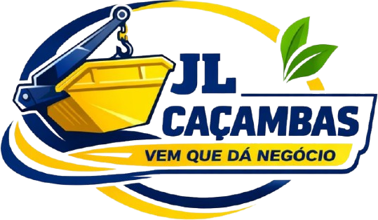
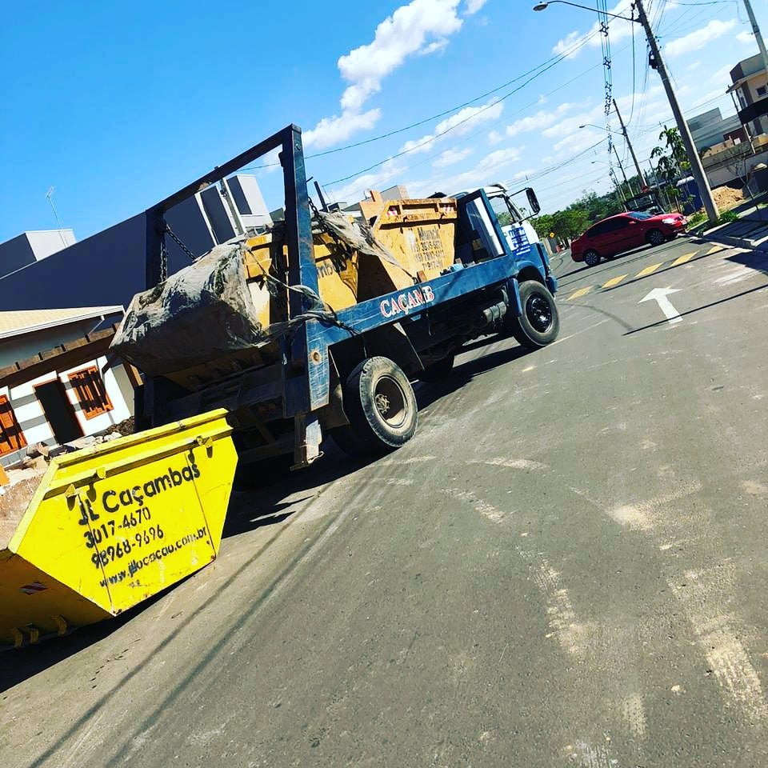
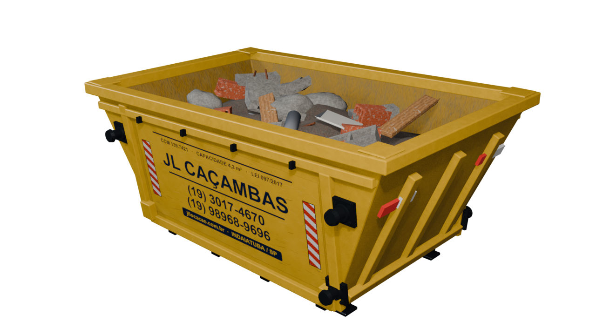

Posicionamento & Borda
- Volume útil 4,2 m³ — entulho nunca acima da borda superior.
- Distância máxima de 30 cm do meio-fio em vaga permitida.
- Mínimo de 10 m da esquina; proibida sobre calçadas, hidrantes, zona azul ou faixa amarela.

00 Abertura
ALUGUEL DE CAÇAMBA EM INDAIATUBA Obra limpa, entrega pontual.
Caçambas 4,2 m³, Munck e empilhadeiras direto do DIMPE II.

A JL Caçambas e Munck iniciou suas atividades em 2013, em Indaiatuba/SP. Nascemos com uma premissa operacional simples: obra parada por atraso de entulho custa caro demais para o cliente.
Atendemos pessoas físicas em reformas residenciais e empresas, construtoras e indústrias do Distrito Industrial com caçambas estacionárias de 4,2 m³, caminhão Munck, empilhadeiras e prazos contratuais sob medida.
Cada entrega sai da nossa base no DIMPE II cadastrada, identificada e dentro de todas as exigências municipais — sem improviso e sem risco de multa na sua calçada.
Unidades amarelas regulamentadas para obras residenciais, comerciais e industriais com retirada ágil.
Locação de caminhão Munck e empilhadeiras para descargas técnicas, máquinas e estruturas no canteiro.
Trocas programadas, faturamento organizado e prioridade de despacho para construtoras e indústrias de Indaiatuba.
Alugar caçamba não é só deixar uma caixa de ferro na rua. É manter o ritmo inteiro da sua obra.
Chapas dobradas em aço carbono sobre longarinas reforçadas absorvem o impacto direto de blocos de concreto, contrapiso e demolição pesada.
Geometria trapezoidal padrão Brooks permite carga lateral confortável com carrinho de mão sem desperdiçar espaço útil nem estourar a borda.
Mandou mensagem no (19) 98968-9696, nossa equipe em Indaiatuba agenda retirada ou troca simultânea para o pedreiro não perder um minuto.
A JL Caçambas opera sob rigor integral da Lei 46.594/2005 e da Lei Municipal 097/2017 de Indaiatuba — protegendo sua obra contra multas e autuações.
Sem terceirização opaca. Fotos reais dos nossos caminhões poliguindaste, caçambas cadastradas e operações em obras de Indaiatuba.



Remoção ágil de entulho de construção civil, reformas e demolições com unidades cadastradas e dentro da norma municipal.
Cotar Caçamba →Içamento, carga, descarga e transporte técnico de máquinas, estruturas metálicas, geradores e materiais pesados em obra ou fábrica.
Cotar Munck →Locação de empilhadeiras para movimentação logística de pallets e cargas em indústrias, galpões e canteiros de Indaiatuba.
Cotar Empilhadeira →Prazos diferenciados, trocas programadas e atendimento dedicado para construtoras, engenharias e indústrias do polo de Indaiatuba.
Atendimento Empresas →Empresas, construtoras, shoppings e indústrias que operam conosco em Indaiatuba.



Ideal para reforma de banheiro, cozinha, troca de pisos ou abertura de paredes. Entregue na vaga regulamentada sem obstruir a calçada.
Distrito Industrial (DIMPE II) · Indaiatuba / SP
Sábado: 07h00 às 11h00
CNPJ 19.810.393/0001-27 · Desde 2013